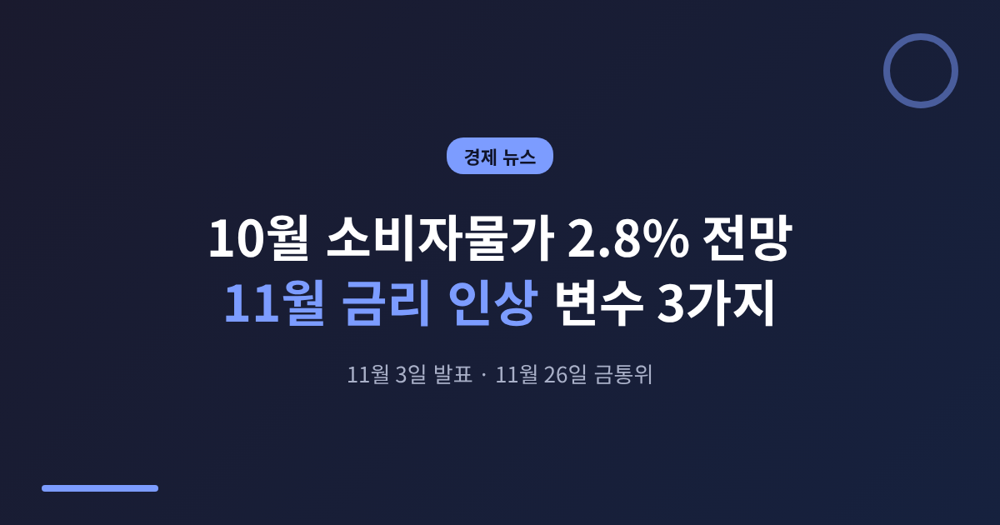
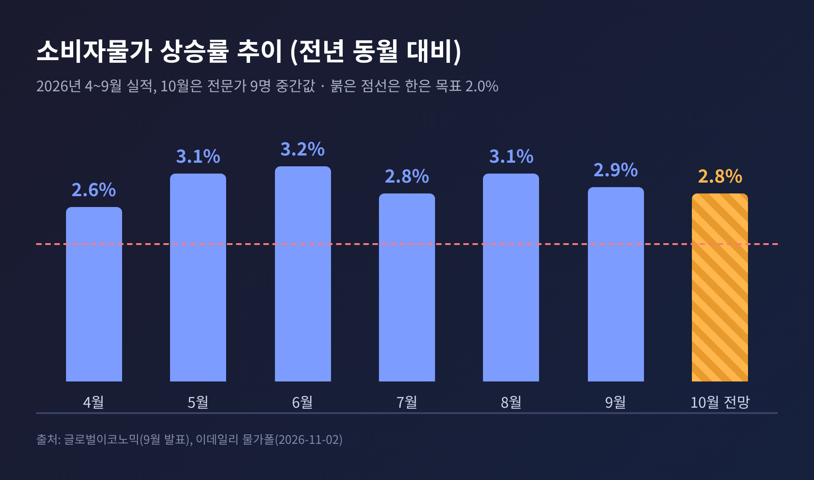
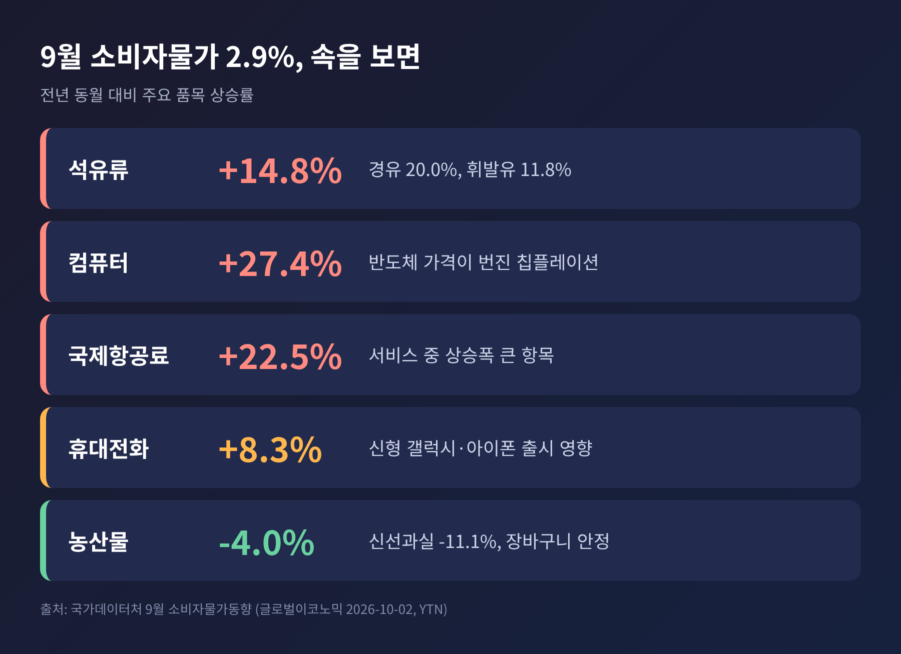
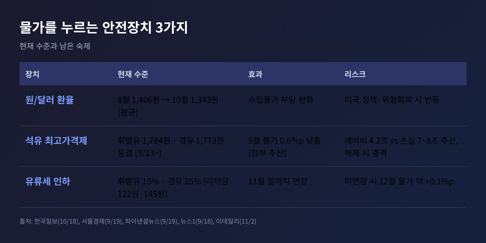
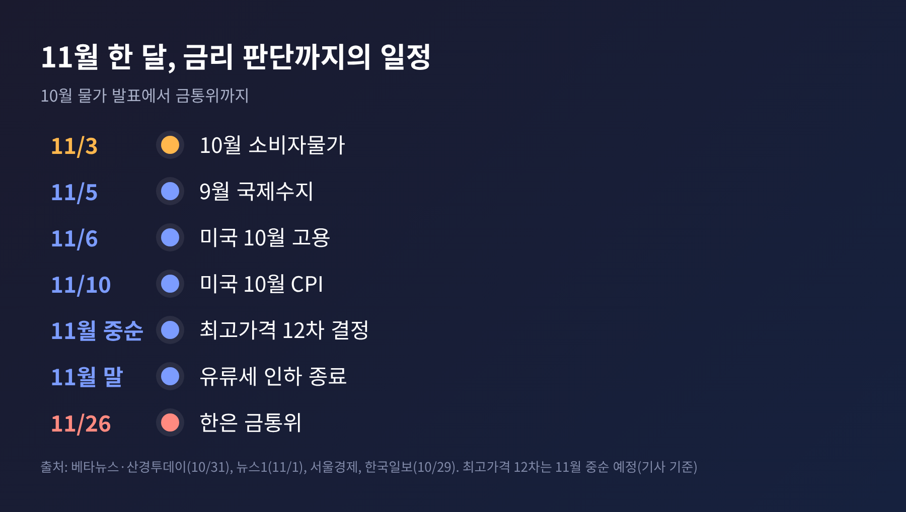
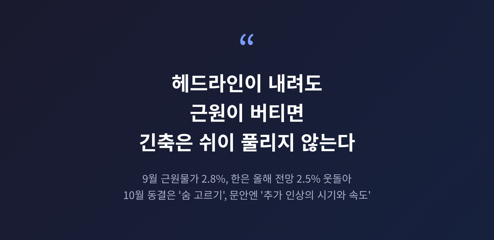

이번 글에서는 내일(11월 3일) 발표되는 10월 소비자물가를 짚어 보겠습니다. 시장은 전년 동월 대비 2.8%를 예상하고 있고, 이 숫자가 11월 26일 한국은행 금융통화위원회의 판단에 힘을 실을지가 관건입니다. 전망치와 쟁점, 발표 뒤 볼 지표까지 순서대로 정리합니다.
3줄 요약
1. 10월 소비자물가는 11월 3일(화) 발표, 전문가 9명 중간값은 2.8%(9월 2.9%, 8월 3.1%)입니다.
2. 숫자가 내려가도 근원물가와 성장률이 높아 한은의 11월 인상론은 여전히 우세합니다.
3. 환율 하락, 석유 최고가격제, 유류세 인하가 물가를 눌러 왔고, 이 안전장치의 만기가 변수입니다.
국가데이터처는 11월 3일 '10월 소비자물가동향'을 내놓습니다. 같은 날 정부와 IMF의 연례 협의도 시작됩니다.
이데일리가 증권사와 은행 전문가 9명에게 물은 결과, 중간값은 전년 동월 대비 2.8%였습니다. 5명이 2.8%, 4명이 2.7%를 예상했습니다. 전월 대비로는 0.2%입니다.
올해 흐름은 이렇습니다. 4월 2.6%, 5월 3.1%, 6월 3.2%, 7월 2.8%, 8월 3.1%, 9월 2.9%였습니다. 예상대로라면 8월 이후 두 달 연속 둔화하는 셈입니다.
다만 전망이 한 점으로 모이지는 않습니다. 한국일보는 지난 18일 10월 물가를 2.9%로 추정했습니다. 이지호 한은 부총재는 10월 초 "3% 내외의 높은 수준"을 말했습니다. 뉴스1이 이번 주 관전 포인트로 '3%를 넘길까'를 꼽은 것도 같은 맥락입니다. 2.7%에서 3% 안팎까지 열어 두고 보시는 편이 안전합니다.

한은 기준금리는 연 3.00%입니다. 7월에 2년 8개월 만에 긴축으로 돌아섰고, 8월에 한 번 더 올렸습니다. 10월 22일에는 만장일치로 동결했습니다.
동결이 인상 중단 선언은 아니었습니다. 통화정책방향 문안에는 '추가 인상의 시기와 속도'라는 표현이 남았습니다. 증권가는 이를 숨 고르기로 읽었습니다.
전망도 비슷하게 모였습니다. 10월 중순 전문가 13명 설문에서 전원이 다음 인상 시점을 11월로 꼽았고, 연말 금리는 3.25%로 봤습니다. 모건스탠리는 11월 3.25% 인상을, SK증권은 적정 금리 3.50%를 제시했습니다. 시장 일각에서는 11월과 내년 1분기에 각각 0.25%포인트씩 올려 최종 3.50%에 이를 것으로 봅니다.
그래서 10월 물가는 인상 여부를 가르는 마지막 큰 지표 가운데 하나입니다. 2.8%가 확인되면 한은은 "물가가 꺾였다"가 아니라 "여전히 목표 2%를 웃돈다"는 쪽으로 읽을 여지가 큽니다.
9월 소비자물가는 2.9%였습니다. 숫자만 보면 8월보다 내렸습니다. 그러나 속을 보면 사정이 다릅니다.
농산물이 4.0%, 신선과실이 11.1% 내려 장바구니 부담을 덜었습니다. 반면 석유류는 14.8% 올랐습니다. 경유 20.0%, 휘발유 11.8%입니다. 컴퓨터는 27.4%, 휴대전화는 8.3% 올랐고, 반도체 가격이 전자제품 값으로 번지는 이른바 '칩플레이션'이 확인됩니다. 국제항공료도 22.5% 뛰었습니다.
농산물·석유류를 뺀 지수는 2.7%, 식료품·에너지를 뺀 OECD 기준 지수는 2.8%였습니다. 한은의 올해 근원물가 전망 2.5%를 이미 웃도는 수준입니다.
8월 3.1%에서 9월 2.9%로 내렸으니 둔화처럼 보입니다. 그런데 8월 수치에는 지난해 SK텔레콤 요금 감면에 따른 기저효과가 섞여 있었고, 이를 걷어내면 8월은 약 2.5%였다는 분석이 있습니다. 이 시각에서는 9월이 오히려 오른 셈입니다. 국가데이터처 관계자도 9월 물가 압력이 8월보다 뚜렷이 낮다고 보기는 어렵다는 취지로 설명했습니다.
3% 넘게 오른 품목의 비중도 37%로, 4월 29%부터 다섯 달째 올랐습니다. 오르는 품목이 넓게 퍼지고 있다는 뜻입니다.

물가 상승률을 낮춰 온 요인도 있습니다. 세 가지입니다.
첫째, 환율입니다. 원/달러 환율 월평균은 8월 1,406.3원, 9월 1,359.0원, 10월(16일까지) 1,342.6원으로 내려 약 2년 만에 가장 낮은 수준입니다. 6월에는 1,528원까지 올랐으니 수입물가 부담이 한결 가벼워졌습니다.
둘째, 석유 최고가격제입니다. 3월 13일 시작해 정유사 공급가격 상한을 4주 단위로 묶어 왔습니다. 휘발유 1,784원, 경유 1,773원, 등유 1,380원 수준이 11차 고시까지 이어졌습니다. 정부는 이 제도가 9월 물가를 0.6%포인트 낮췄다고 추산합니다. 8월 물가가 제도 없이는 3%대 후반이었을 것이라는 설명도 나왔습니다.
셋째, 유류세 인하입니다. 휘발유 15%, 경유 25% 인하로 리터당 각각 122원, 145원 효과가 있고 11월 말까지 연장돼 있습니다.
문제는 만기와 비용입니다. 예비비는 4.2조 원인데 업계는 손실을 7조~8조 원으로 추산합니다. 유류세 인하가 연장되지 않으면 12월 물가가 약 0.1%포인트 오를 수 있다는 분석도 있습니다. 가격을 눌러 둔 만큼 풀리는 순간의 반동이 걱정입니다. 저는 이 대목이 올해 물가의 가장 조용한 변수라고 생각합니다.

한은이 인상을 고민하는 이유는 물가 숫자만이 아닙니다. 성장이 예상을 크게 넘었습니다.
3분기 실질 GDP는 전 분기보다 1.0% 늘었습니다. 한은 전망치 0.3%의 3배가 넘습니다. 4분기 성장률이 0%여도 올해 성장률은 3.6%로, 기존 전망 3.3%를 웃돕니다. 신현송 총재는 "성장과 물가 오름세가 더 세졌다"며 긴축 기조를 이어가겠다고 밝혔습니다. 반도체 수출과 설비투자가 끌어올린 수요 요인이라는 점도 강조했습니다.
반론도 있습니다. 금리 인상은 가계와 취약 차주에게 부담입니다. 총재 스스로 10월 국정감사에서 경제 주체가 적응할 시간을 점검한다고 말했습니다. 은행 가계대출 증가폭이 8월 3.5조 원에서 9월 0.6조 원으로 줄었지만, 주택담보대출은 여전히 2.9조 원 늘었고 서울 아파트값도 오르고 있습니다. 빚을 낸 가계로서는 금리 부담이 가볍지 않습니다.
한계도 분명합니다. 이번 물가가 석유류와 칩 가격 같은 공급 요인에서 왔다면 금리의 효과는 제한적입니다. 한은은 수요 쪽 압력이 크다고 보지만, 전문가들 사이에서도 공급과 수요의 비중을 두고 판단이 갈릴 수 있습니다. 미국 연준은 3.75~4.00%에서 동결해 한미 금리 차는 상단 기준 1.00%포인트로 유지되고 있습니다.
2.8% 안팎이면 시장의 11월 인상 기대는 크게 흔들리지 않을 가능성이 높습니다. 3%를 넘으면 기대가 더 굳어지고, 2.7% 아래로 내려도 근원물가가 높으면 인상론은 쉽게 꺼지지 않을 것입니다.
발표 뒤에는 다음 순서로 확인해 보시길 권합니다.
11월 6일 미국 고용과 10일 미국 10월 물가도 환율을 거쳐 한은에 영향을 줄 변수입니다. 연말까지 중동 정세가 길어지면 유가 압력이 커지고, 빨리 정리되면 둔화 폭이 커진다는 것이 전문가들의 공통된 단서입니다.

정리하면 이렇습니다. 내일의 2.8%는 그 자체로 결론이 아니라, 11월 26일로 가는 길 위의 한 이정표입니다. 숫자의 높낮이보다 근원물가가 어디에 머무는지가 한은의 판단을 좌우할 것입니다.

가계에는 당분간 금리가 한 번 더 오를 수 있다는 가정 아래 이자 부담을 점검해 두는 일이 가장 현실적인 대비일 것입니다. 발표 숫자가 나오면, 이 글의 전망과 얼마나 맞았는지 다시 짚어 보겠습니다.
※ 이 글은 공개된 보도와 통계를 정리한 정보 제공용이며, 투자·대출 등 특정 금융 행위를 권유하지 않습니다. 10월 실제 수치는 발표 후 확인하시기 바랍니다.